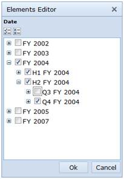
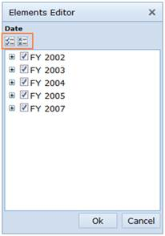
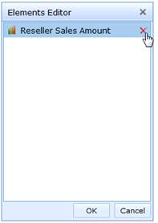

Check and uncheck nodes of a dimension in Elements Editor
The check option is provided in such a way that on selecting the parent node, its corresponding child nodes get automatically selected. If a leaf node is selected, it does not affect others since it is the end node on a tree.
The uncheck option is provided in such a way that on deselecting the parent node, its corresponding child nodes get automatically deselected and on deselecting all the child nodes, its corresponding parent node get automatically deselected.

Figure 25: Elements Editor
Representing state of the nodes of a dimension
Nodes are represented in two states namely:
i) Checked and
ii) Unchecked
Check and uncheck all nodes of a dimension in Elements Editor
On selecting the check all/uncheck all buttons in the elements editor, the nodes are changed accordingly:
i) When no child node is selected, the parent will be unselected.
ii) When any child node is selected, the parent will get selected automatically.

Figure 26: Check/Uncheck All in Elements Editor
Removing a measure from Elements Editor
In order to remove the measure, place the mouse pointer over the corresponding measure and you can see a remove option at the right-hand side. Select the remove option to remove the measure from the list and in order to avoid the current selection, click Cancel.

Figure 27: Removing element in Elements Editor